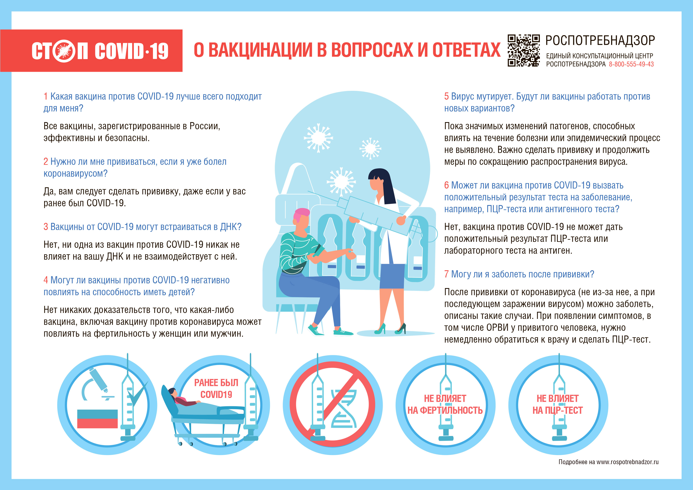

Алгоритм действий населения в условиях риска распространения коронавирусной инфекции
С целью профилактики новой коронавирусной инфекции:
Соблюдайте масочный режим, социальную дистанцию при необходимости посещения общественных мест, особенно при посещении медицинских организаций.
Всегда мойте руки: когда приходите на работу или возвращаетесь домой.
Избегайте мест массового скопления людей, по возможности ограничьте поездки и пользование общественным транспортом.
Не следует путешествовать заграницу.
При возвращении из-за рубежа каждый гражданин в течение 3 календарных дней обязан пройти лабораторное обследование на COVID-19 методом ПЦР и разместить информацию о результате исследования на портале государственных и муниципальных услуг с соблюдением режима изоляции по месту жительства (пребывания) до получения результатов лабораторного исследования. Листок нетрудоспособности на данный период не выдается.
Если у вас повышенная температура, кашель и одышка, а также если Вы контактировали с заразившимся COVID-19, Вам необходимо оставаться дома и обратиться к врачу в поликлинику по месту проживания. При резком ухудшении состояния (нарастание одышки, стойкое повышение температуры и др.) необходимо вызвать скорую медицинскую помощь.
Департаментом здравоохранения и фармации Ярославской области организована работа «горячей линии» для граждан.
При появлении вопросов Вам необходимо обращаться по телефонам:
(4852)40-04-55 - круглосуточно, (4852)73-80-60, (4852)73-83-33 - ежедневно с 08:00 до 19:00.
Единая региональная информационно-справочная служба «122»
Из-за сложившейся эпидемиологической ситуации возросло количество обращений в Службу экстренных вызовов и на горячие линии профильных комитетов и служб.
В целях оказания информационной поддержки жителям и в связи с угрозой распространения вируса COVID-19 Правительством было принято решение об организации централизованного приема обращений граждан, желающих получить актуальную информацию по распространению коронавирусной инфекции.
В период противоэпидемических мер Единая региональная информационно-справочная служба «122» позволит гражданам круглосуточно получать актуальную информацию по ситуации с распространением коронавирусной инфекции, а также по принимаемым антивирусным мерам:
общие вопросы по коронавирусу: о тестах, диагностике и профилактике;
о мерах и режиме самоизоляции, карантина, особенности получения больничных листов;
об организации работы детских садов, школ, колледжей;
о нормативно-правовой базе;
о карантине после отпуска, о возможности выезда за границу, о компенсациях;
о возможностях передвижения по городу и доступности транспорта;
о работе волонтеров, о выплатах, льготах, обеспечению продуктовыми наборами.
На период действия в регионе мер по недопущению распространения новой коронавирусной инфекции COVID-19 для жителей нашего города организована возможность бесплатного вызова на короткий номер «122» как со стационарных, так и с мобильных телефонов.
О работе поликлиники взрослых ГБУЗ ЯО "Переславская ЦРБ"
Поликлиника взрослых ГБУЗ ЯО "Переславская ЦРБ" временно по субботам работает с 08:00 до 14:00
В ГБУЗ ЯО «Переславская ЦРБ» на постоянную работу срочно требуются специалисты
Врач - терапевт участковый, заработная плата от 60000 рублей;
Врач - оториноларинголог, заработная плата от 100000 рублей.
За справками обращаться в отдел кадров больницы. Тел. 848535-6-64-06
О соблюдении режима самоизоляции
Департамент здравоохранения и фармации Ярославской области рекомендует соблюдать режим самоизоляции гражданам в возрасте старше 65 лет, а также гражданам, имеющим следующие заболевания:
эндокринной системы - инсулинозависимый сахарный диабет,
органов дыхания,
системы кровообращения,
мочеполовой системы - хронические болезни почек 3-5 стадии,
трансплантированные органы и ткани,
злокачественные новообразования любой локализации.
Рекомендации по профилактике новой коронавирусной инфекции для тех, кому 60 и более лет
Новая коронавирусная инфекция передается от больного человека к здоровому человеку через близкие контакты. Когда человек чихает или кашляет рядом с вами. Когда капельки слизи изо рта и носа больного попадают на поверхности, к которым вы прикасаетесь.
Люди «серебряного возраста» старше 60 лет в группе особого риска. Именно у пожилых из-за нагрузки на иммунную систему возможны осложнения, в том числе такие опасные как вирусная пневмония. Эти осложнения могут привести к самым печальным исходам. Важно сохранить Ваше здоровье!
Постарайтесь реже посещать общественные места. По возможности реже пользуйтесь общественным транспортом, особенно в часы пик. Сократите посещение магазинов и торговых центров, МФЦ, банков.
Попросите своих близких или сотрудников социальной службы помочь с оплатой коммунальных услуг, приобретением продуктов или необходимых товаров дистанционно.
Если Ваши близкие вернулись из-за границы и у них появились признаки простуды – ограничьте с ними контакты и настоятельно требуйте их обращения за медицинской помощью. Ваш мудрый совет поможет сохранить здоровье Вас и Ваших родных!
Часто мойте руки с мылом, гигиена очень важна для Вашего здоровья. Мойте их после возвращения с улицы, из общественных мест, после контактов с упаковками из магазинов, перед приготовлением пищи. Не трогайте грязными руками лицо, рот, нос и глаза – так вирус может попасть в Ваш организм.
Запаситесь одноразовыми бумажными платочками. При кашле и чихании прикрывайте ими рот и нос и выбрасывайте салфетку сразу после использования.
Пользуйтесь влажными салфетками для дезинфекции. Протирайте ими сумки, телефоны, книги и другие предметы, которые были вместе с Вами в общественных местах и в транспорте.
Если Вы заболели или почувствовали себя нехорошо (не только в связи с простудными признаками, но и по другим проблемам со здоровьем, например, давлением) – не ходите в поликлинику, а вызывайте врача на дом.
Если Вы заболели простудой, а среди Ваших близких люди выезжали за рубеж в последние 2 недели, обязательно скажите об этом врачу. Он назначит анализ на новую коронавирусную инфекцию.
Берегите себя и будьте здоровы!
О работе личного кабинета застрахованного лица
Территориальный фонд обязательного медицинского страхования Ярославской области (ТФОМС) уведомляет, что в соответствии с приказом Министерства здравоохранения РФ от 28.02.2019 г. №108н "Об утверждении Правил обязательного медицинского страхования" заработал Личный кабинет Единого портала государственных и муниципальных услуг (функций)
Доступ к личному кабинету застрахованного лица предоставлен также на сайте ТФОМС (lk.yartfoms.ru). Для этого необходимо пройти регистрацию через учетную запись на портале Госуслуг (www.gosuslugi.ru).
Отображенные в Личном кабинете застрахованного гражданина сведения доступны для ознакомления круглосуточно без взимания платы и иных ограничений. При отображении информации в Личном кабинете ТФОМС обеспечивает соблюдение требований законодательства Российской Федерации о персональных данных.
Переславская ЦРБ готова предоставить жилье и хорошо оплачиваемую работу всем медицинским работникам, кто остался без крова и средств к существованию
События, происходящие сегодня на территории ЛНР и ДНР, волнуют всех без исключения.
Да и как можно оставаться в стороне, когда гибнут мирные жители, страдают старики и дети. Россия во все времена принимала активное участие в поддержке народов соседних государств, когда беда наступала - предоставляла им кров и защиту.
Так было и в 2014 году. Тогда в Россия приняла в свою семью луганчан и Дончан, бежавших от ужасов войны.
Многие из них приехали в Переславль. Среди них были врачи и медсестры. Большинство из них работает и по сей день. Часть уехали в Подмосковье.
Единственное, что, без исключения, их объединяет - это желание жить и работать! Заведующая нашей детской поликлиникой Круть Алина Сергеевна - педиатр от Бога, ее любят и маленькие пациенты и их родители, ее уважают и ценят в коллективе.
И приехали к нам даже медицинскими семьями - Гулак Татьяна и Андрей, Киенко Никита и Алла, усилили бригады СМП и стационар. Окопная Марина трудится - врачом-фтизиатром, Жохова Наталья - медсестрой в гинекологии.
Эти все люди настолько отзывчивые и готовые прийти на помощь, может, и потому, что знают цену милосердия, любви и сострадания.
Переславская ЦРБ готова предоставить жилье и хорошо оплачиваемую работу всем медицинским работникам, кто остался без крова и средств к существованию. Примем на работу и создадим условия для прочего персонала - уборщицы, водители, специалисты коммунального хозяйства- не оставим в беде нашего брата!
О работе личного кабинета застрахованного лица
Территориальный фонд обязательного медицинского страхования Ярославской области (ТФОМС) уведомляет, что в соответствии с приказом Министерства здравоохранения РФ от 28.02.2019 г. №108н "Об утверждении Правил обязательного медицинского страхования" заработал Личный кабинет Единого портала государственных и муниципальных услуг (функций)
Доступ к личному кабинету застрахованного лица предоставлен также на сайте ТФОМС (lk.yartfoms.ru). Для этого необходимо пройти регистрацию через учетную запись на портале Госуслуг (www.gosuslugi.ru).
Отображенные в Личном кабинете застрахованного гражданина сведения доступны для ознакомления круглосуточно без взимания платы и иных ограничений. При отображении информации в Личном кабинете ТФОМС обеспечивает соблюдение требований законодательства Российской Федерации о персональных данных.
О работе личного кабинета застрахованного лица
Территориальный фонд обязательного медицинского страхования Ярославской области (ТФОМС) уведомляет, что в соответствии с приказом Министерства здравоохранения РФ от 28.02.2019 г. №108н "Об утверждении Правил обязательного медицинского страхования" заработал Личный кабинет Единого портала государственных и муниципальных услуг (функций)
Доступ к личному кабинету застрахованного лица предоставлен также на сайте ТФОМС (lk.yartfoms.ru). Для этого необходимо пройти регистрацию через учетную запись на портале Госуслуг (www.gosuslugi.ru).
Отображенные в Личном кабинете застрахованного гражданина сведения доступны для ознакомления круглосуточно без взимания платы и иных ограничений. При отображении информации в Личном кабинете ТФОМС обеспечивает соблюдение требований законодательства Российской Федерации о персональных данных.
О работе личного кабинета застрахованного лица
Территориальный фонд обязательного медицинского страхования Ярославской области (ТФОМС) уведомляет, что в соответствии с приказом Министерства здравоохранения РФ от 28.02.2019 г. №108н "Об утверждении Правил обязательного медицинского страхования" заработал Личный кабинет Единого портала государственных и муниципальных услуг (функций)
Доступ к личному кабинету застрахованного лица предоставлен также на сайте ТФОМС (lk.yartfoms.ru). Для этого необходимо пройти регистрацию через учетную запись на портале Госуслуг (www.gosuslugi.ru).
Отображенные в Личном кабинете застрахованного гражданина сведения доступны для ознакомления круглосуточно без взимания платы и иных ограничений. При отображении информации в Личном кабинете ТФОМС обеспечивает соблюдение требований законодательства Российской Федерации о персональных данных.
О работе личного кабинета застрахованного лица
Территориальный фонд обязательного медицинского страхования Ярославской области (ТФОМС) уведомляет, что в соответствии с приказом Министерства здравоохранения РФ от 28.02.2019 г. №108н "Об утверждении Правил обязательного медицинского страхования" заработал Личный кабинет Единого портала государственных и муниципальных услуг (функций)
Доступ к личному кабинету застрахованного лица предоставлен также на сайте ТФОМС (lk.yartfoms.ru). Для этого необходимо пройти регистрацию через учетную запись на портале Госуслуг (www.gosuslugi.ru).
Отображенные в Личном кабинете застрахованного гражданина сведения доступны для ознакомления круглосуточно без взимания платы и иных ограничений. При отображении информации в Личном кабинете ТФОМС обеспечивает соблюдение требований законодательства Российской Федерации о персональных данных.
О работе личного кабинета застрахованного лица
Территориальный фонд обязательного медицинского страхования Ярославской области (ТФОМС) уведомляет, что в соответствии с приказом Министерства здравоохранения РФ от 28.02.2019 г. №108н "Об утверждении Правил обязательного медицинского страхования" заработал Личный кабинет Единого портала государственных и муниципальных услуг (функций)
Доступ к личному кабинету застрахованного лица предоставлен также на сайте ТФОМС (lk.yartfoms.ru). Для этого необходимо пройти регистрацию через учетную запись на портале Госуслуг (www.gosuslugi.ru).
Отображенные в Личном кабинете застрахованного гражданина сведения доступны для ознакомления круглосуточно без взимания платы и иных ограничений. При отображении информации в Личном кабинете ТФОМС обеспечивает соблюдение требований законодательства Российской Федерации о персональных данных.
О работе личного кабинета застрахованного лица
Территориальный фонд обязательного медицинского страхования Ярославской области (ТФОМС) уведомляет, что в соответствии с приказом Министерства здравоохранения РФ от 28.02.2019 г. №108н "Об утверждении Правил обязательного медицинского страхования" заработал Личный кабинет Единого портала государственных и муниципальных услуг (функций)
Доступ к личному кабинету застрахованного лица предоставлен также на сайте ТФОМС (lk.yartfoms.ru). Для этого необходимо пройти регистрацию через учетную запись на портале Госуслуг (www.gosuslugi.ru).
Отображенные в Личном кабинете застрахованного гражданина сведения доступны для ознакомления круглосуточно без взимания платы и иных ограничений. При отображении информации в Личном кабинете ТФОМС обеспечивает соблюдение требований законодательства Российской Федерации о персональных данных.
О работе личного кабинета застрахованного лица
Территориальный фонд обязательного медицинского страхования Ярославской области (ТФОМС) уведомляет, что в соответствии с приказом Министерства здравоохранения РФ от 28.02.2019 г. №108н "Об утверждении Правил обязательного медицинского страхования" заработал Личный кабинет Единого портала государственных и муниципальных услуг (функций)
Доступ к личному кабинету застрахованного лица предоставлен также на сайте ТФОМС (lk.yartfoms.ru). Для этого необходимо пройти регистрацию через учетную запись на портале Госуслуг (www.gosuslugi.ru).
Отображенные в Личном кабинете застрахованного гражданина сведения доступны для ознакомления круглосуточно без взимания платы и иных ограничений. При отображении информации в Личном кабинете ТФОМС обеспечивает соблюдение требований законодательства Российской Федерации о персональных данных.
О работе личного кабинета застрахованного лица
Территориальный фонд обязательного медицинского страхования Ярославской области (ТФОМС) уведомляет, что в соответствии с приказом Министерства здравоохранения РФ от 28.02.2019 г. №108н "Об утверждении Правил обязательного медицинского страхования" заработал Личный кабинет Единого портала государственных и муниципальных услуг (функций)
Доступ к личному кабинету застрахованного лица предоставлен также на сайте ТФОМС (lk.yartfoms.ru). Для этого необходимо пройти регистрацию через учетную запись на портале Госуслуг (www.gosuslugi.ru).
Отображенные в Личном кабинете застрахованного гражданина сведения доступны для ознакомления круглосуточно без взимания платы и иных ограничений. При отображении информации в Личном кабинете ТФОМС обеспечивает соблюдение требований законодательства Российской Федерации о персональных данных.
О работе личного кабинета застрахованного лица
Территориальный фонд обязательного медицинского страхования Ярославской области (ТФОМС) уведомляет, что в соответствии с приказом Министерства здравоохранения РФ от 28.02.2019 г. №108н "Об утверждении Правил обязательного медицинского страхования" заработал Личный кабинет Единого портала государственных и муниципальных услуг (функций)
Доступ к личному кабинету застрахованного лица предоставлен также на сайте ТФОМС (lk.yartfoms.ru). Для этого необходимо пройти регистрацию через учетную запись на портале Госуслуг (www.gosuslugi.ru).
Отображенные в Личном кабинете застрахованного гражданина сведения доступны для ознакомления круглосуточно без взимания платы и иных ограничений. При отображении информации в Личном кабинете ТФОМС обеспечивает соблюдение требований законодательства Российской Федерации о персональных данных.
О работе личного кабинета застрахованного лица
Территориальный фонд обязательного медицинского страхования Ярославской области (ТФОМС) уведомляет, что в соответствии с приказом Министерства здравоохранения РФ от 28.02.2019 г. №108н "Об утверждении Правил обязательного медицинского страхования" заработал Личный кабинет Единого портала государственных и муниципальных услуг (функций)
Доступ к личному кабинету застрахованного лица предоставлен также на сайте ТФОМС (lk.yartfoms.ru). Для этого необходимо пройти регистрацию через учетную запись на портале Госуслуг (www.gosuslugi.ru).
Отображенные в Личном кабинете застрахованного гражданина сведения доступны для ознакомления круглосуточно без взимания платы и иных ограничений. При отображении информации в Личном кабинете ТФОМС обеспечивает соблюдение требований законодательства Российской Федерации о персональных данных.
О работе личного кабинета застрахованного лица
Территориальный фонд обязательного медицинского страхования Ярославской области (ТФОМС) уведомляет, что в соответствии с приказом Министерства здравоохранения РФ от 28.02.2019 г. №108н "Об утверждении Правил обязательного медицинского страхования" заработал Личный кабинет Единого портала государственных и муниципальных услуг (функций)
Доступ к личному кабинету застрахованного лица предоставлен также на сайте ТФОМС (lk.yartfoms.ru). Для этого необходимо пройти регистрацию через учетную запись на портале Госуслуг (www.gosuslugi.ru).
Отображенные в Личном кабинете застрахованного гражданина сведения доступны для ознакомления круглосуточно без взимания платы и иных ограничений. При отображении информации в Личном кабинете ТФОМС обеспечивает соблюдение требований законодательства Российской Федерации о персональных данных.
Туляремия - природно-очаговая инфекция. В Ярославской области природный очаг туляремии располагается в Ярославском районе, где были выделены 6 культур возбудителя туляремии Francisella Tularensis из воды реки Пахма в д. Иванова-Кошевники (мелиорационная канава), д. Мордвиново, реки Шиголость в д. Язвинцево, д. Федорино, д. Думнино, д. Романцево-ручьи.
Случаи заболевания туляремией людей в последние годы в Ярославской области не регистрировались.
Возбудитель туляремии характеризуется высокой устойчивостью в окружающей среде, особенно, при низких температурах и высокой влажности (выживает при −30° C, сохраняется во льду до 10 месяцев, в мороженом мясе до 3 месяцев), менее устойчив к высыханию (в шкурках павших от туляремии грызунов сохраняется до 1,5 месяцев при комнатной температуре и до 1 недели при температуре 30° C). Остается жизнеспособным в речной воде при температуре 10° C до 9 месяцев, в почве до 2,5-4 месяца, на зерне, соломе при температуре −5° C до 190 дней, при 8° C до 2 месяцев, при 20-30° С до 3 недель. Длительно сохраняется в молоке, сливках при низких температурах. Малоустойчив к высоким температурам (при 60° C погибает через 5-10 минут, при 100° С — в течение 1-2 минут), солнечному свету, УФ-лучам, дезинфицирующим средствам (растворы лизола, хлорамина, хлорной извести убивают его за 3-5 минут).
Источники инфекции: водяная крыса, ондатра, зайцы, все виды полевок и мышей. Эти виды животных являются основным резервуаром возбудителя туляремии в природе. Переносчиками возбудителя служат кровососущие насекомые: клещи, слепни, комары, блохи.
Пути заражения людей:
При прямом контакте с больными животными (снятие шкур, их обработка).
Через воду и пищевые продукты, инфицированные выделениями грызунов.
Через укусы инфицированных кровососущих насекомых (клещи, комары, слепни и др.).
При вдыхании инфицированной пыли при работе с сеном, соломой, зерном, овощами, уборке помещений, заселенных больными грызунами.
Чаще всего заболевания туляремией имеют место в сельско-хозяйственных районах, среди жителей городов заболевают лица, выезжающие на охоту и рыбную ловлю.
Симптомы: в преобладающем большинстве случаев заболевание начинается внезапно. Возникает озноб, температура повышается до 38-40° С. Развиваются упорная головная боль, головокружение, мышечные боли, слабость, отсутствие аппетита. Лицо больного обычно отечно, отмечается покраснение слизистых оболочек глаз, полости рта, кожи лица. В дальнейшем развивается лимфаденит – воспаление лимфатических узлов. Локализация лимфаденита зависит от формы туляремии и места первичного внедрения возбудителя в организм: слизистые ротовой полости, миндалины, слизистые оболочки глаз, кожа в области укуса кровососущего насекомого. Способ проникновения возбудителя в организм определяет основные проявления болезни:
- при проникновении через кожу на месте внедрения возбудителя развивается первичный аффект – язвочка на коже, затем развивается воспаление лимфатического узла, ближайшего к месту внедрения возбудителя;
- при проникновении через слизистую оболочку ротовой полости и миндалин появляются боли в горле, покраснение и отек миндалин, затем развивается некроз тканей миндалин, увеличиваются шейные, околоушные, подмышечные лимфоузлы;
- при попадании бактерий Fr. tularensis через инфицированные продукты питания и воду в желудочно-кишечный тракт появляется затруднение глотания (дисфагия), боли в животе, тошнота, рвота;
- если местом внедрения стала слизистая оболочка глаз, развивается конъюнктивит с эрозивно-язвенным повреждением конъюнктивы и гнойным отделяемым из глаза;
- в результате вдыхания частиц инфицированной инфицированной пыли развивается легочная форма, она протекает в форме пневмонии с частыми осложнениями в виде плеврита (воспаление плевры) и бронхоэктазов (расширение отдельных участков бронхов в результате повреждения бронхиальной стенки, приводящее к тяжелым нарушениям функции дыхания);
- генерализованная форма заболевания является самой тяжелой, развивается у ослабленных лиц и не зависит от места внедрения возбудителя. Протекает по типу общей инфекции (сепсис) с выраженным токсикозом, высокой лихорадкой, потерей сознания, бредом, сильной головной и мышечной болями.
Осложнения: вторичная туляремийная пневмония, полиартриты, перикардит, менингоэнцефалит (развиваются при генерализованной форме туляремии).
Летальные исходы случаются в 0,5% случаев.
Лечение:
Лечение пациентов с установленным диагнозом «туляремия» или при подозрении на указанное заболевание осуществляется в инфекционном стационаре. Пациенты получают антибактериальную терапию, дезинтоксикационную терапию, по показаниям проводится оперативное лечение воспалившихся лимфатических узлов.
Меры профилактики:
Неспецифическая профилактика:
Неспецифическая профилактика при туляремии включает комплекс мероприятий по дератизации (борьба с грызунами – источниками возбудителя) и дезинсекции (борьба с членистоногими насекомыми – переносчиками возбудителя).
Кроме этого необходимо:
Защищать от грызунов колодцы, пищевые продукты.
Не пить сырую воду из открытых источников.
Обеспечивать непроницаемость для грызунов жилищ, погребов и др.
Проводить санитарную очистку территорий, не допускать захламления.
Использовать репеленты (средства защиты от укусов комаров и присасывания клещей) и защитную одежду для предотвращения заражения через кровососущих насекомых.
Специфическая профилактика:
Самая эффективная мера – это проведение иммунизации против туляремии. Прививка защищает от заболевания в течение 5 лет. Вакцинация проводится с 7-летнего возраста, повторяется каждые 5 лет.
Для личной безопасности каждый человек, проживающий в очаге туляремии, должен своевременно получить прививку против туляремии в медицинской организации по месту проживания.
При первых признаках заболевания не занимайтесь самолечением, обращайтесь за медицинской помощью.
О работе личного кабинета застрахованного лица
Территориальный фонд обязательного медицинского страхования Ярославской области (ТФОМС) уведомляет, что в соответствии с приказом Министерства здравоохранения РФ от 28.02.2019 г. №108н "Об утверждении Правил обязательного медицинского страхования" заработал Личный кабинет Единого портала государственных и муниципальных услуг (функций)
Доступ к личному кабинету застрахованного лица предоставлен также на сайте ТФОМС (lk.yartfoms.ru). Для этого необходимо пройти регистрацию через учетную запись на портале Госуслуг (www.gosuslugi.ru).
Отображенные в Личном кабинете застрахованного гражданина сведения доступны для ознакомления круглосуточно без взимания платы и иных ограничений. При отображении информации в Личном кабинете ТФОМС обеспечивает соблюдение требований законодательства Российской Федерации о персональных данных.
О работе личного кабинета застрахованного лица
Территориальный фонд обязательного медицинского страхования Ярославской области (ТФОМС) уведомляет, что в соответствии с приказом Министерства здравоохранения РФ от 28.02.2019 г. №108н "Об утверждении Правил обязательного медицинского страхования" заработал Личный кабинет Единого портала государственных и муниципальных услуг (функций)
Доступ к личному кабинету застрахованного лица предоставлен также на сайте ТФОМС (lk.yartfoms.ru). Для этого необходимо пройти регистрацию через учетную запись на портале Госуслуг (www.gosuslugi.ru).
Отображенные в Личном кабинете застрахованного гражданина сведения доступны для ознакомления круглосуточно без взимания платы и иных ограничений. При отображении информации в Личном кабинете ТФОМС обеспечивает соблюдение требований законодательства Российской Федерации о персональных данных.
О работе личного кабинета застрахованного лица
Территориальный фонд обязательного медицинского страхования Ярославской области (ТФОМС) уведомляет, что в соответствии с приказом Министерства здравоохранения РФ от 28.02.2019 г. №108н "Об утверждении Правил обязательного медицинского страхования" заработал Личный кабинет Единого портала государственных и муниципальных услуг (функций)
Доступ к личному кабинету застрахованного лица предоставлен также на сайте ТФОМС (lk.yartfoms.ru). Для этого необходимо пройти регистрацию через учетную запись на портале Госуслуг (www.gosuslugi.ru).
Отображенные в Личном кабинете застрахованного гражданина сведения доступны для ознакомления круглосуточно без взимания платы и иных ограничений. При отображении информации в Личном кабинете ТФОМС обеспечивает соблюдение требований законодательства Российской Федерации о персональных данных.
О работе личного кабинета застрахованного лица
Территориальный фонд обязательного медицинского страхования Ярославской области (ТФОМС) уведомляет, что в соответствии с приказом Министерства здравоохранения РФ от 28.02.2019 г. №108н "Об утверждении Правил обязательного медицинского страхования" заработал Личный кабинет Единого портала государственных и муниципальных услуг (функций)
Доступ к личному кабинету застрахованного лица предоставлен также на сайте ТФОМС (lk.yartfoms.ru). Для этого необходимо пройти регистрацию через учетную запись на портале Госуслуг (www.gosuslugi.ru).
Отображенные в Личном кабинете застрахованного гражданина сведения доступны для ознакомления круглосуточно без взимания платы и иных ограничений. При отображении информации в Личном кабинете ТФОМС обеспечивает соблюдение требований законодательства Российской Федерации о персональных данных.
Минздрав России утвердил новую версию Временных методических рекомендаций по лечению COVID-19
Минздрав России утвердил 15 версию Временных методических рекомендаций по профилактике, диагностике и лечению новой коронавирусной инфекции, подготовленную ведущими российскими экспертами в связи с распространением варианта омикрон SARS-CoV-2.
В новой версии внесены дополнения и уточнения в рекомендации по лечению пациентов с новой коронавирусной инфекцией (COVID-19) с учетом новых научных данных и клинической практики. Включены рекомендации по организации медицинской помощи пациентам с COVID-19 из групп риска при проведении терапии препаратами на основе вируснейтрализующих моноклональных антител в условиях дневного стационара.
В связи с интенсивным распространением варианта омикрон выделены приоритетные группы пациентов для назначения амбулаторного лечения. При этом по-прежнему основным подходом к терапии COVID-19 должно быть упреждающее назначение лечения до развития полного симптомокомплекса жизнеугрожающих состояний, а именно пневмонии, острого респираторного дистресс-синдрома, сепсиса.
Новая версия временных методических рекомендаций содержит также типовые схемы организации медицинской помощи пациентам с ОРВИ, гриппом, новой коронавирусной инфекции (COVID-19) легкого течения и течения средней степени тяжести.
Также в новую версию включены рекомендации по оценке изменений после перенесенного COVID-19 с помощью лучевой диагностики.
Новая версия методических рекомендаций размещена на официальном сайте Минздрава России и направлена в регионы для использования в практической работе.
Сертификат о вакцинации или перенесенном заболевании можно будет оформить на основании положительного теста на антитела
Сертификат о вакцинации или перенесенном заболевании можно будет оформить на основании положительного теста на антитела – Минздрав России внес соответствующие изменения в форму COVID-сертификата. Приказ вступит в силу с 21 февраля.
Сертификат будет формироваться однократно при наличии на Едином портале госуслуг сведений о результатах теста на антитела к коронавирусу не позднее 3 календарных дней со дня подачи заявления на Портале госуслуг. Тест на антитела может быть проведен в любой лицензированной лаборатории. При этом требований к уровню антител не устанавливается – достаточно их наличия в организме. Срок действия сертификата в этом случае составит 6 месяцев с даты получения результатов теста. Повторный выпуск сертификата на основании результатов теста на антитела не предусмотрен.
Кроме того, сертификат может быть оформлен на основании положительного результата ПЦР-тестирования, подтвержденного результатами теста на антитела. Результаты тестов также должны быть доступны на Едином портале госуслуг. Срок действия сертификата в этом случае составит 1 год с даты положительного ПЦР-теста.
О работе личного кабинета застрахованного лица
Территориальный фонд обязательного медицинского страхования Ярославской области (ТФОМС) уведомляет, что в соответствии с приказом Министерства здравоохранения РФ от 28.02.2019 г. №108н "Об утверждении Правил обязательного медицинского страхования" заработал Личный кабинет Единого портала государственных и муниципальных услуг (функций)
Доступ к личному кабинету застрахованного лица предоставлен также на сайте ТФОМС (lk.yartfoms.ru). Для этого необходимо пройти регистрацию через учетную запись на портале Госуслуг (www.gosuslugi.ru).
Отображенные в Личном кабинете застрахованного гражданина сведения доступны для ознакомления круглосуточно без взимания платы и иных ограничений. При отображении информации в Личном кабинете ТФОМС обеспечивает соблюдение требований законодательства Российской Федерации о персональных данных.
О работе личного кабинета застрахованного лица
Территориальный фонд обязательного медицинского страхования Ярославской области (ТФОМС) уведомляет, что в соответствии с приказом Министерства здравоохранения РФ от 28.02.2019 г. №108н "Об утверждении Правил обязательного медицинского страхования" заработал Личный кабинет Единого портала государственных и муниципальных услуг (функций)
Доступ к личному кабинету застрахованного лица предоставлен также на сайте ТФОМС (lk.yartfoms.ru). Для этого необходимо пройти регистрацию через учетную запись на портале Госуслуг (www.gosuslugi.ru).
Отображенные в Личном кабинете застрахованного гражданина сведения доступны для ознакомления круглосуточно без взимания платы и иных ограничений. При отображении информации в Личном кабинете ТФОМС обеспечивает соблюдение требований законодательства Российской Федерации о персональных данных.
О работе личного кабинета застрахованного лица
Территориальный фонд обязательного медицинского страхования Ярославской области (ТФОМС) уведомляет, что в соответствии с приказом Министерства здравоохранения РФ от 28.02.2019 г. №108н "Об утверждении Правил обязательного медицинского страхования" заработал Личный кабинет Единого портала государственных и муниципальных услуг (функций)
Доступ к личному кабинету застрахованного лица предоставлен также на сайте ТФОМС (lk.yartfoms.ru). Для этого необходимо пройти регистрацию через учетную запись на портале Госуслуг (www.gosuslugi.ru).
Отображенные в Личном кабинете застрахованного гражданина сведения доступны для ознакомления круглосуточно без взимания платы и иных ограничений. При отображении информации в Личном кабинете ТФОМС обеспечивает соблюдение требований законодательства Российской Федерации о персональных данных.
О работе личного кабинета застрахованного лица
Территориальный фонд обязательного медицинского страхования Ярославской области (ТФОМС) уведомляет, что в соответствии с приказом Министерства здравоохранения РФ от 28.02.2019 г. №108н "Об утверждении Правил обязательного медицинского страхования" заработал Личный кабинет Единого портала государственных и муниципальных услуг (функций)
Доступ к личному кабинету застрахованного лица предоставлен также на сайте ТФОМС (lk.yartfoms.ru). Для этого необходимо пройти регистрацию через учетную запись на портале Госуслуг (www.gosuslugi.ru).
Отображенные в Личном кабинете застрахованного гражданина сведения доступны для ознакомления круглосуточно без взимания платы и иных ограничений. При отображении информации в Личном кабинете ТФОМС обеспечивает соблюдение требований законодательства Российской Федерации о персональных данных.
О вакцинации против COVID-19 в вопросах и ответах
-
Какая вакцина против COVID-19 подойдет мне лучше всего?
Все вакцины, зарегистрированные в России, эффективны и безопасны. Лучше всего привиться тем препаратом, который есть в доступе. Если у вас есть хронические заболевания или иные особенности здоровья, проконсультируйтесь с врачом по выбору вакцины.
-
Нужно ли мне прививаться, если я уже болел коронавирусом?
Да, вам следует сделать прививку, даже если у вас ранее был COVID-19. У людей, которые выздоравливают после COVID-19, развивается естественный иммунитет к вирусу, но пока достоверно неизвестно, как долго он длится и насколько хорошо вы защищены. Вакцины обеспечивают более надежную защиту. Рекомендуется привиться через несколько месяцев после перенесенного заболевания.
-
Вакцины от COVID-19 могут встраиваться в ДНК?
Нет, ни одна из вакцин против COVID-19 никак не влияет на вашу ДНК и не взаимодействует с ней. Вакцины знакомят иммунные клетки организма с фрагментами генетического материала коронавируса , они их запоминают и начинают вырабатывать антитела, направленные на защиту от вируса.
-
Могут ли вакцины против COVID-19 негативно повлиять на способность иметь детей?
Нет никаких доказательств того, что какая-либо вакцина, включая вакцину против коронавируса может повлиять на фертильность у женщин или мужчин.
Российские вакцины от коронавируса прошли необходимые испытания по оценке влияния на потомство, прежде всего на лабораторных животных. Негативных последствий не выявлено. Если вы в настоящее время пытаетесь забеременеть, вам не нужно избегать беременности после вакцинации от COVID-19.
-
Вирус мутирует. Будут ли вакцины работать против новых вариантов?
Эксперты по всему миру постоянно изучают, как новые варианты влияют на поведение вируса, включая любое потенциальное влияние на эффективность вакцин от COVID-19. Пока значимых изменений патогенов, способных влиять на течение болезни или эпидемический процесс не выявлено. В Роспотребнадзоре ведется постоянное наблюдение за изменчивостью вируса. Если будет доказано, что какая-либо из вакцин менее эффективна против одного или нескольких из этих вариантов, можно будет изменить состав вакцин для защиты от них. Но в то же время важно сделать прививку и продолжить меры по сокращению распространения вируса. Всё это помогает снизить вероятность мутации вируса. Кроме того, очень важно соблюдать социальную дистанцию, носить маски, мыть руки и своевременно обращаться за медицинской помощью.
-
Может ли вакцина против COVID-19 вызвать положительный результат теста на заболевание, например, ПЦР-теста или антигенного теста?
Нет, вакцина против COVID-19 не может дать положительный результат ПЦР-теста или лабораторного теста на антиген. Это объясняется тем, что при тестировании проверяется наличие активного заболевания, а не иммунитет человека.
-
Могу ли я заболеть после прививки?
После прививки от коронавируса (не из-за нее, а при последующем заражении вирусом) можно заболеть, описаны такие случаи. При появлении симптомов, в том числе ОРВИ у привитого человека, нужно немедленно обратиться к врачу и сделать ПЦР-тест. При этом люди, которые заболевают после вакцинации, переносят инфекцию легко и не имеют осложнений.
Источник

О работе личного кабинета застрахованного лица
Территориальный фонд обязательного медицинского страхования Ярославской области (ТФОМС) уведомляет, что в соответствии с приказом Министерства здравоохранения РФ от 28.02.2019 г. №108н "Об утверждении Правил обязательного медицинского страхования" заработал Личный кабинет Единого портала государственных и муниципальных услуг (функций)
Доступ к личному кабинету застрахованного лица предоставлен также на сайте ТФОМС (lk.yartfoms.ru). Для этого необходимо пройти регистрацию через учетную запись на портале Госуслуг (www.gosuslugi.ru).
Отображенные в Личном кабинете застрахованного гражданина сведения доступны для ознакомления круглосуточно без взимания платы и иных ограничений. При отображении информации в Личном кабинете ТФОМС обеспечивает соблюдение требований законодательства Российской Федерации о персональных данных.
О работе личного кабинета застрахованного лица
Территориальный фонд обязательного медицинского страхования Ярославской области (ТФОМС) уведомляет, что в соответствии с приказом Министерства здравоохранения РФ от 28.02.2019 г. №108н "Об утверждении Правил обязательного медицинского страхования" заработал Личный кабинет Единого портала государственных и муниципальных услуг (функций)
Доступ к личному кабинету застрахованного лица предоставлен также на сайте ТФОМС (lk.yartfoms.ru). Для этого необходимо пройти регистрацию через учетную запись на портале Госуслуг (www.gosuslugi.ru).
Отображенные в Личном кабинете застрахованного гражданина сведения доступны для ознакомления круглосуточно без взимания платы и иных ограничений. При отображении информации в Личном кабинете ТФОМС обеспечивает соблюдение требований законодательства Российской Федерации о персональных данных.